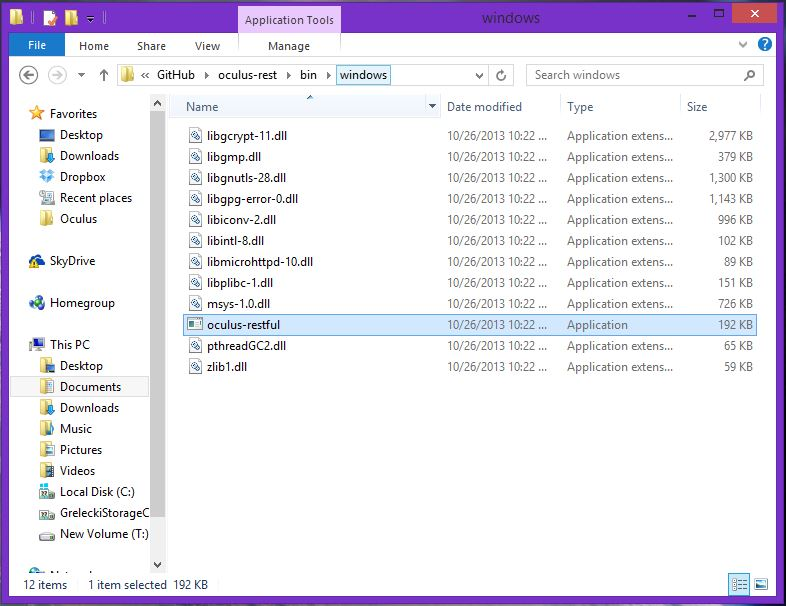
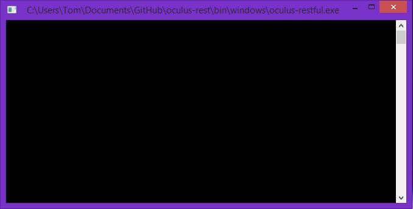
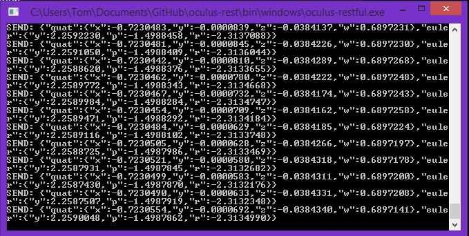

Download oculus-rest here: github.com/possan/oculus-rest.
Navigate to the directory containing the oculus-rest project.
Run the provided executable for your operating system. You must have the Oculus Rift™ connected to your computer via USB before running this application.
Run the intended application. Data will start to be send between the oculus rest application and your HMD to provide head tracking.
The GitHub repository also includes project files for Visual Studio(Windows) or XCode(OSX) so that you can build and run the files locally.